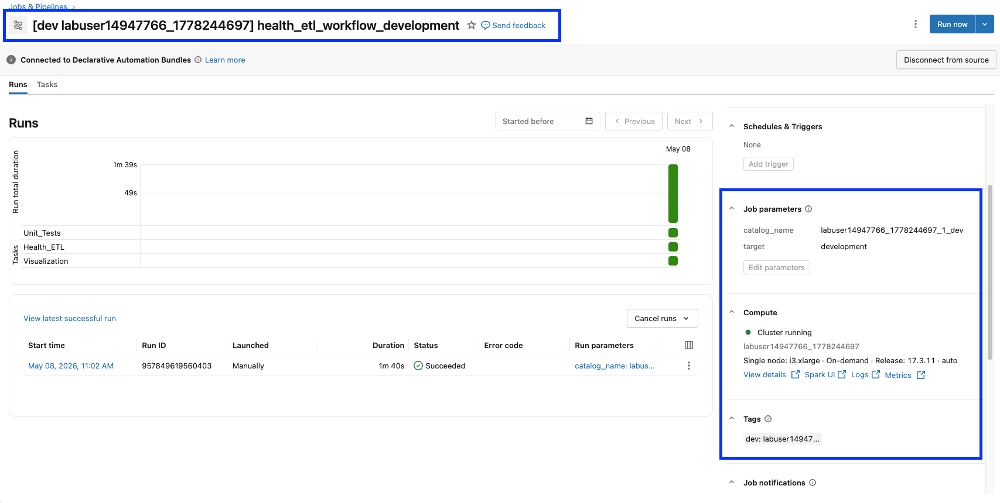

Section 5 · Implementing CI-CD · Quelle: Kurs 8, Modul 06
Kapitel 1–5 dieser Section haben gezeigt, wie sich PySpark-Code in wiederverwendbare Funktionen zerlegen lässt und wie Unit- sowie Integrationstests dafür sorgen, dass eine Data-Pipeline zuverlässig funktioniert. Declarative Automation Bundles sind das Werkzeug, das diese Bausteine zu einer durchgängigen CI/CD-Pipeline zusammenfügt: ein einziges Bundle, das Unit-Tests, eine Lakeflow-Declarative-Pipeline mit eingebauten Integrationstests und eine Visualisierung als einen zusammenhängenden Workflow definiert – und das identisch über drei Umgebungen (development, stage, production) hinweg promotet wird.
Während die einfachen Beispiele aus den vorherigen Kapiteln nur einen Job enthielten, zeigt das Full Project-Beispiel aus Modul 06, wie ein realistisches Data-Engineering-Projekt aufgebaut ist:
| Ordner/Datei | Inhalt |
|---|---|
databricks.yml | Bundle-Name, include-Liste, drei Targets (development/stage/production) |
resources/variables.yml | Alle Bundle-Variablen zentral an einer Stelle (Benutzername, E-Mail, Cluster-Lookup, Katalognamen je Umgebung) |
resources/job/dabs_workflow.job.yml | Der Workflow: drei Tasks (Unit-Tests, Pipeline, Visualisierung) |
resources/pipeline/health_etl_pipeline.pipeline.yml | Konfiguration der Lakeflow Declarative Pipeline (ehem. Delta Live Tables) |
src/dlt_pipelines/ | Die eigentlichen ETL-Notebooks der Pipeline (Bronze/Silver/Gold) |
src/helpers/project_functions.py | Wiederverwendbare, testbare Transformationsfunktionen |
tests/unit_tests/ | pytest-Unit-Tests für die Helper-Funktionen |
tests/integration_test/ | Integrationstests als DLT-Expectations innerhalb der Pipeline |
Die Hauptdatei bindet alle Ressourcen-Dateien über include ein und definiert für jedes der drei Targets die abweichenden Werte – in development und stage laufen die Tasks noch auf einem festen Lab-Cluster, in production dagegen auf Serverless-Compute:
bundle:
name: health_etl_bundle
include:
- "./resources/variables.yml"
- "./resources/pipeline/health_etl_pipeline.pipeline.yml"
- "./resources/job/dabs_workflow.job.yml"
targets:
development:
mode: development
default: true
resources:
jobs:
health_etl_workflow:
name: health_etl_workflow_${bundle.target}
tasks:
- task_key: Unit_Tests
existing_cluster_id: ${var.cluster_id}
- task_key: Visualization
existing_cluster_id: ${var.cluster_id}
workspace:
root_path: /Workspace/Users/${workspace.current_user.userName}/.bundle/${bundle.name}/${bundle.target}
stage:
mode: development
resources:
jobs:
health_etl_workflow:
name: health_etl_workflow_${bundle.target}
tasks:
- task_key: Unit_Tests
existing_cluster_id: ${var.cluster_id}
- task_key: Visualization
existing_cluster_id: ${var.cluster_id}
workspace:
root_path: /Workspace/Users/${workspace.current_user.userName}/.bundle/${bundle.name}/${bundle.target}
variables:
target_catalog: ${var.catalog_stage}
raw_data_path: /Volumes/${var.catalog_stage}/default/health
production:
mode: production
workspace:
root_path: /Workspace/Users/${workspace.current_user.userName}/.bundle/${bundle.name}/${bundle.target}
variables:
target_catalog: ${var.catalog_prod}
raw_data_path: /Volumes/${var.catalog_prod}/default/health
Bemerkenswert: stage nutzt technisch denselben mode: development wie die Entwicklungsumgebung (kein produktiver Namens-Präfix nötig, da es noch keine echten Endnutzer gibt), bekommt aber bereits die größere stage-Datenmenge und einen eigenen Katalog zugewiesen – ein typisches Muster, um eine Vorproduktions-Stufe realistisch zu testen, bevor produktive Daten involviert sind.
Der Job in resources/job/dabs_workflow.job.yml verkettet drei Tasks unterschiedlichen Typs zu einem Workflow: einen Notebook-Task, der pytest-Unit-Tests ausführt, einen Pipeline-Task, der die Lakeflow-Pipeline anstößt, und einen abschließenden Notebook-Task für die Visualisierung:
resources:
jobs:
health_etl_workflow:
name: health_etl_workflow_${bundle.target}
description: Final Workflow SDK
email_notifications:
on_failure:
- ${var.my_email}
tasks:
- task_key: Unit_Tests
notebook_task:
notebook_path: ../../run_unit_tests.ipynb
source: WORKSPACE
description: Execute unit tests for project.
- task_key: Visualization
depends_on:
- task_key: Health_ETL
notebook_task:
notebook_path: ../../src/Final Visualization.ipynb
base_parameters:
catalog_name: ${var.target_catalog}
source: WORKSPACE
description: Final visualization for project.
- task_key: Health_ETL
depends_on:
- task_key: Unit_Tests
pipeline_task:
pipeline_id: ${resources.pipelines.health_etl_pipeline.id}
full_refresh: true
description: Spark Declarative Pipeline
parameters:
- name: target
default: ${bundle.target}
- name: catalog_name
default: ${var.target_catalog}
Zwei Dinge sind hier lehrreich. Erstens: Die Task-Reihenfolge im YAML (Unit_Tests, Visualization, Health_ETL) muss nicht der Ausführungsreihenfolge entsprechen – ausschlaggebend ist ausschließlich depends_on. Zweitens: pipeline_task referenziert die Pipeline nicht über einen festen Namen, sondern über ${resources.pipelines.health_etl_pipeline.id} – eine Bundle-interne Referenz, die die CLI beim Deployment automatisch auf die tatsächliche, generierte Pipeline-ID auflöst. Die Pipeline selbst wird in einer eigenen Datei definiert und bindet die ETL-Notebooks sowie die Integrationstests als Bibliotheken ein:
resources:
pipelines:
health_etl_pipeline:
name: health_etl_pipeline_${bundle.target}
libraries:
- glob:
include: ../../src/dlt_pipelines/gold_tables_dlt.sql
- glob:
include: ../../src/dlt_pipelines/ingest-bronze-silver_dlt.py
- glob:
include: ../../tests/integration_test/integration_tests_dlt
schema: ${var.schema}
photon: true
catalog: ${var.target_catalog}
serverless: true
root_path: ../../src/dlt_pipelines
configuration:
target: ${bundle.target}
raw_data_path: ${var.raw_data_path}
Die eigentliche Transformationslogik steckt in src/helpers/project_functions.py als reine, von Spark-Sessions unabhängig testbare Funktionen (z. B. high_cholest_map, group_ages_map). Der Unit-Test dazu nutzt pyspark.testing.utils und eine pytest-Fixture für die Spark-Session:
import pytest
from pyspark.sql import SparkSession
from pyspark.sql.functions import when, col
from pyspark.testing.utils import assertDataFrameEqual, assertSchemaEqual
from src.helpers import project_functions
@pytest.fixture(scope="session")
def spark():
spark = SparkSession.builder.getOrCreate()
yield spark
def test_high_cholest_column_valid_map(spark):
data = [(0,), (1,), (2,), (3,), (4,), (None,)]
sample_df = spark.createDataFrame(data, ["value"])
actual_df = sample_df.withColumn("actual", project_functions.high_cholest_map("value"))
expected_df = spark.createDataFrame(
[(0, "Normal"), (1, "Above Average"), (2, "High"),
(3, "Unknown"), (4, "Unknown"), (None, "Unknown")],
schema=["value", "actual"]
)
assertDataFrameEqual(actual_df.select(col('value')), expected_df.select(col('value')))
Statt einer separaten Testsuite werden die Integrationstests hier direkt als zusätzliche DLT-Tabellen mit @dlt.expect_all_or_fail in die Pipeline eingebaut: Sie zählen Zeilen in Bronze/Silver und vergleichen sie mit dem für die jeweilige Umgebung erwarteten Wert. In stage und development laufen so alle Prüfungen, in production bewusst nur die auf der Gold-Tabelle – da in Produktion die absolute Zeilenzahl täglich wächst und ein fester Sollwert dort keinen Sinn ergäbe:
import dlt
target = spark.conf.get("target")
target_integration_tests_validation = {
'development': {'health_bronze': {'total_rows': 7500}, 'health_silver': {'total_rows': 7500}},
'stage': {'health_bronze': {'total_rows': 35000}, 'health_silver': {'total_rows': 35000}}
}
def test_count_table_total_rows(table_name, total_count, target):
@dlt.table(name=f"TEST_{target}_{table_name}_total_rows_verification")
@dlt.expect_all_or_fail({"valid count": f"total_rows = {total_count}"})
def count_table_total_rows():
return spark.sql(f"SELECT COUNT(*) AS total_rows FROM LIVE.{table_name}")
# Je nach Zielumgebung unterschiedliche Tests ausfuehren
if target in ('development', 'stage'):
test_count_table_total_rows('health_bronze', total_expected_bronze, target)
test_count_table_total_rows('health_silver', total_expected_silver, target)
test_gold_table_columns()
elif target == 'production':
test_gold_table_columns() # In Produktion nur die Gold-Tabelle pruefen
Der eigentliche CI/CD-Ablauf besteht darin, exakt dieselben Befehle nacheinander gegen alle drei Targets auszuführen – nichts an der Bundle-Definition ändert sich zwischen den Umgebungen, nur die Zielangabe -t:
# 1. Entwicklung: Unit-Tests + ETL + Integrationstests auf 7.500 Beispielzeilen databricks bundle validate -t development databricks bundle deploy -t development databricks bundle run health_etl_workflow # 2. Staging: dieselbe Definition, jetzt gegen 35.000 Zeilen Stage-Daten databricks bundle validate -t stage databricks bundle deploy -t stage databricks bundle run health_etl_workflow -t stage # 3. Produktion: volle Datenmenge, Serverless-Compute statt Lab-Cluster databricks bundle validate -t production databricks bundle deploy -t production databricks bundle run health_etl_workflow -t production # Variablen lassen sich bei Bedarf auch direkt ueberschreiben, ohne die YAML zu aendern databricks bundle validate --var="target_catalog=labuser123_2_stage" -t stage # Aufraeumen: alle drei Umgebungen entfernen databricks bundle destroy -t development --auto-approve databricks bundle destroy -t stage --auto-approve databricks bundle destroy -t production --auto-approve

In einer echten CI/CD-Pipeline (z. B. GitHub Actions) werden diese Befehle nicht manuell aus einem Notebook heraus gestartet, sondern automatisiert bei jedem Push bzw. Merge ausgeführt: ein Validate-Lauf bei jedem Pull Request, ein Deploy-nach-Development bei jedem Merge in einen Feature-Branch, und ein Deploy-nach-Production erst nach manueller Freigabe. Für die Authentifizierung wird dabei statt eines persönlichen Zugangs in der Regel ein Service Principal verwendet (siehe run_as-Einstellung in der Bundle-Konfiguration).